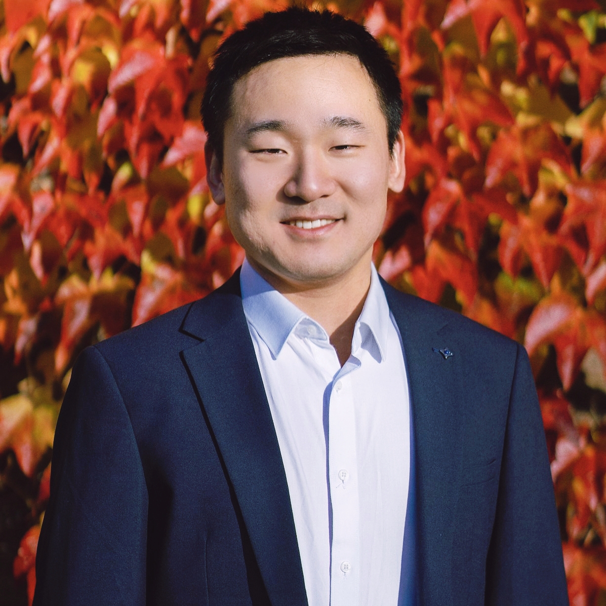
CambridgeCambridge–IrelandSJTU
Group Lead
Dr Guangming Wang
Ward & Burke Assistant Professor at the School of Engineering, University of Galway, and Visiting Assistant Professor at the Department of Engineering, University of Cambridge.
Groups
Research across Cambridge, Galway, and Shanghai.
Our groups
Our people
Researchers and students working together across Cambridge, Cambridge–Ireland and SJTU.

Group Lead
Ward & Burke Assistant Professor at the School of Engineering, University of Galway, and Visiting Assistant Professor at the Department of Engineering, University of Cambridge.
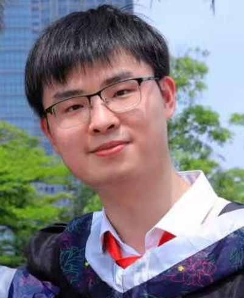
Cambridge Student
PhD student at Cambridge.
PhD Student
PhD student at the University of Cambridge.
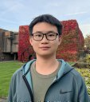
MPhil Student
MPhil student at the University of Cambridge.
Visiting Student
MPhil student at HKUST; visiting MIT.
Cambridge Student
PhD student at Cambridge.
Visiting Student
MPhil student at TUM.
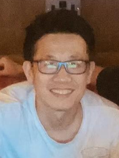
Cambridge Student
PhD student at Cambridge.
Visiting Student
MPhil student at TUM.
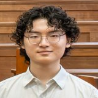
Cambridge Student
Undergraduate student at Cambridge.
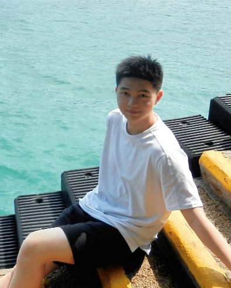
Cambridge Student
Undergraduate student at Cambridge.
Visiting Student
PhD student at Cardiff.
Visiting Student
PhD student at Tsinghua University.
Visiting Student
PhD student at Tsinghua University.
Group Co-Lead
Postdoctoral Research Associate at the University of Cambridge; 3D reconstruction, generative models, physical reasoning with 3DGS, and robotics.
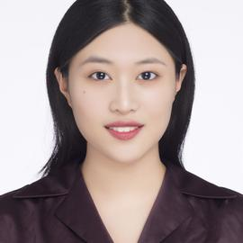
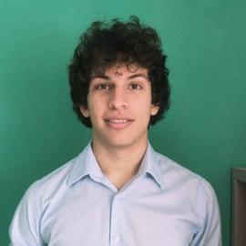
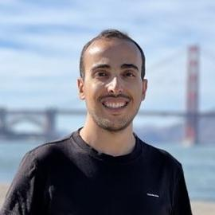
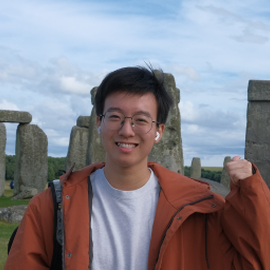

PhD Student
PhD student at SJTU with a full scholarship; visiting NTU. Research interest: semantic SLAM. Co-supervised with Prof. Hesheng Wang.
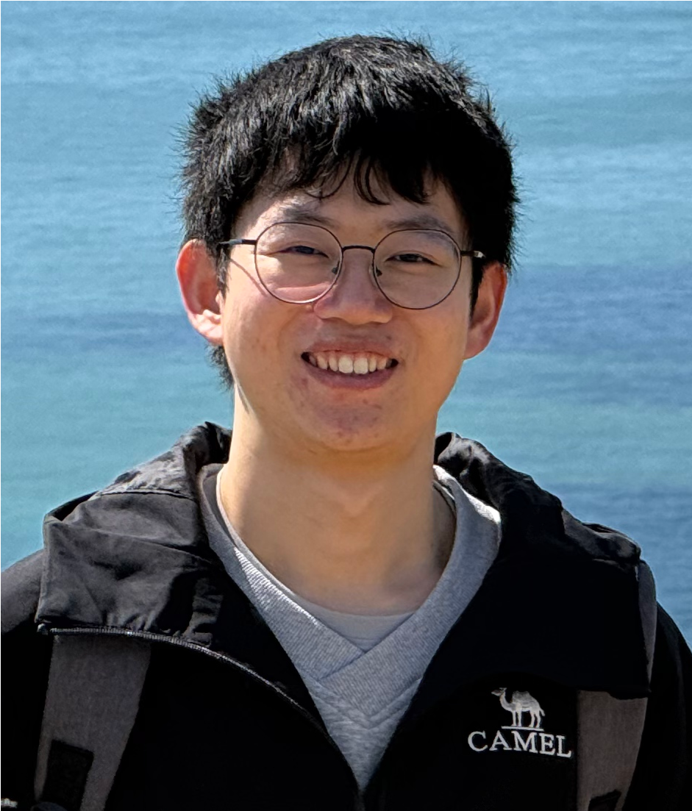
PhD Student
PhD student at SJTU with a full scholarship; visiting UCL. Research interest: 3D reconstruction. Co-supervised with Prof. Zhe Liu.

PhD Student
PhD student at SJTU with a full scholarship; visiting ETH Zürich. Research interest: mobile manipulation. Co-supervised with Prof. Hesheng Wang.

PhD Student
PhD student at SJTU with a full scholarship. Research interest: computer vision and deep learning for robot manipulation. Co-supervised with Prof. Hesheng Wang.
Research facilities
A selection of robotics equipment and experimental platforms from our research and supplied laboratory materials.
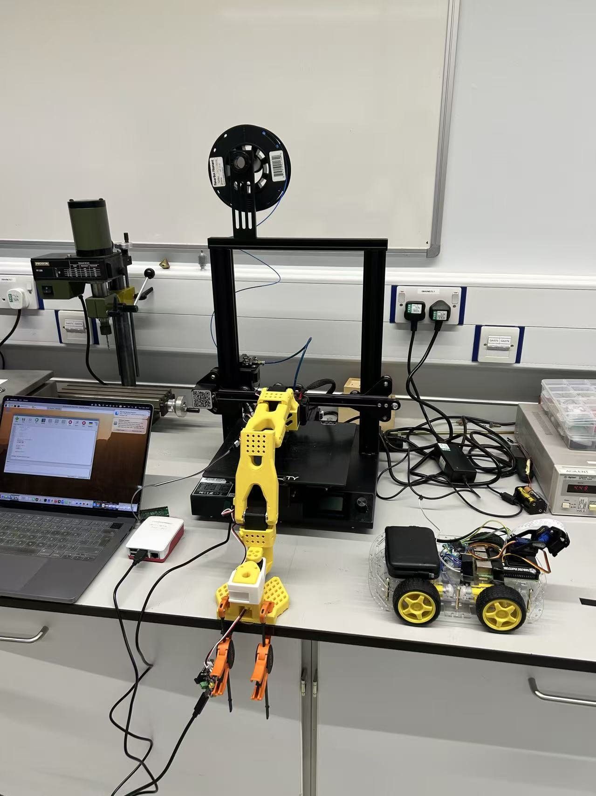
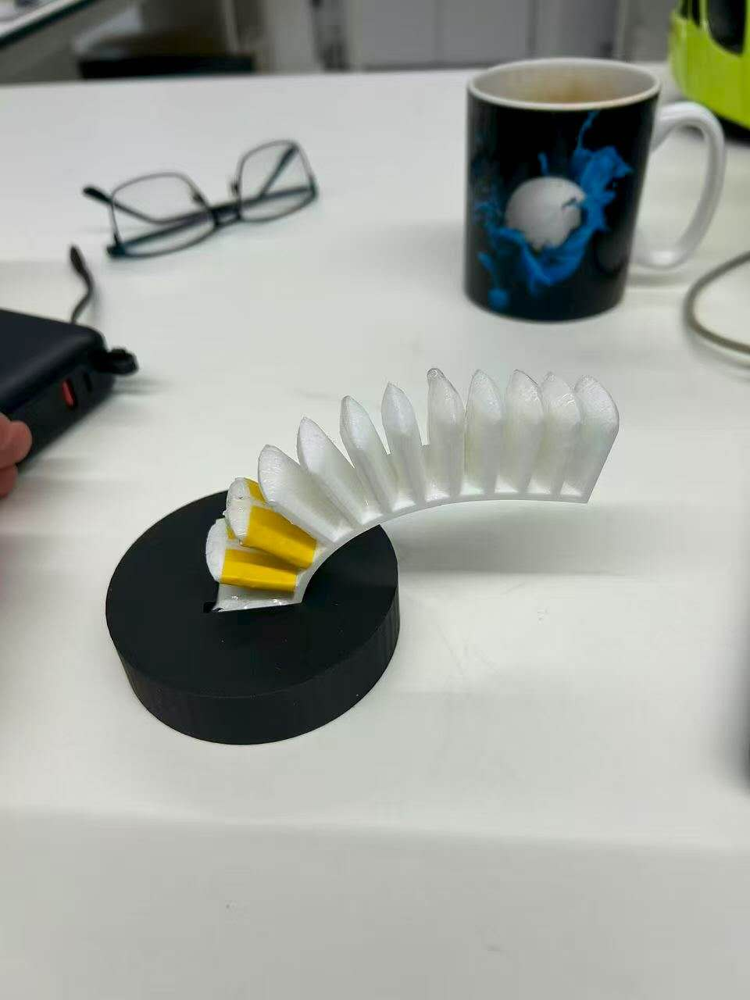


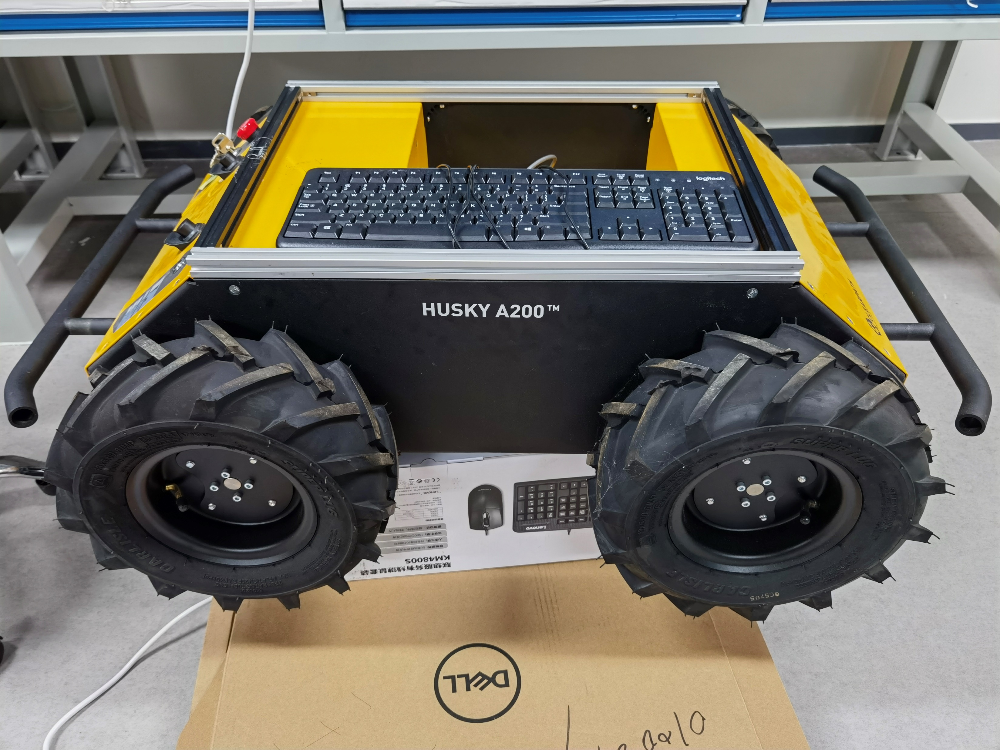
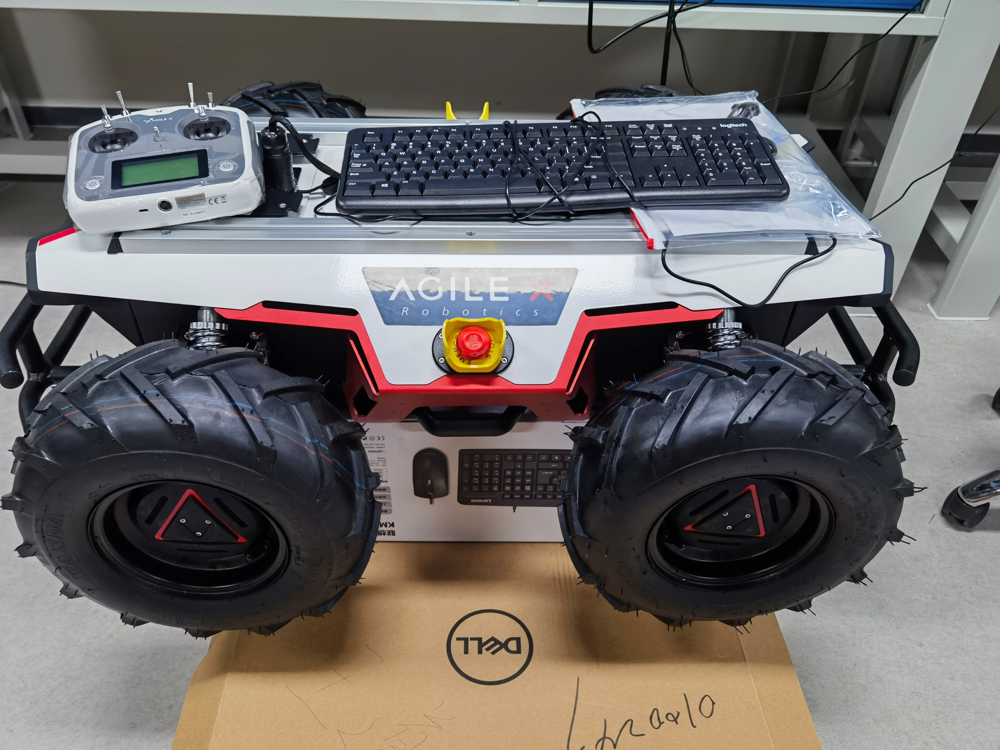
The Hainan laboratory images are from a 2023 equipment presentation. Current availability may have changed.